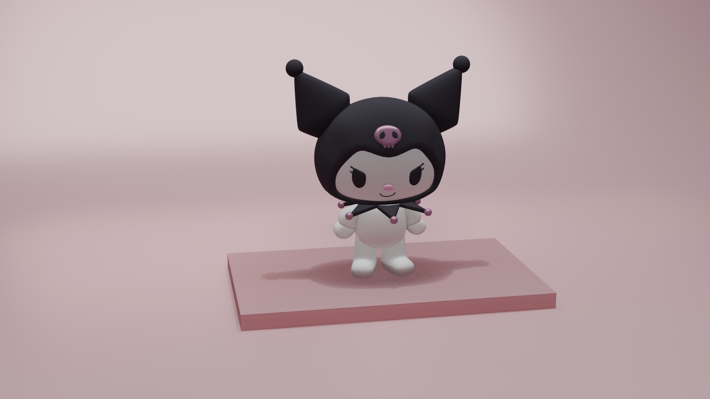
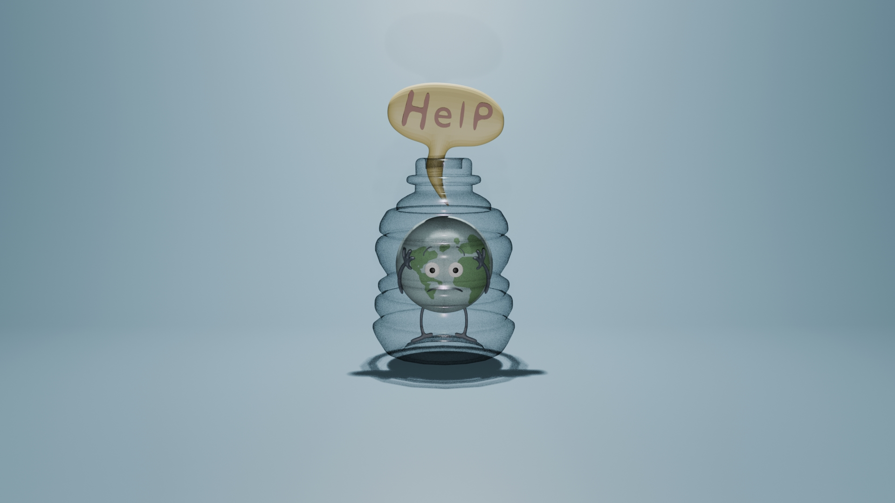
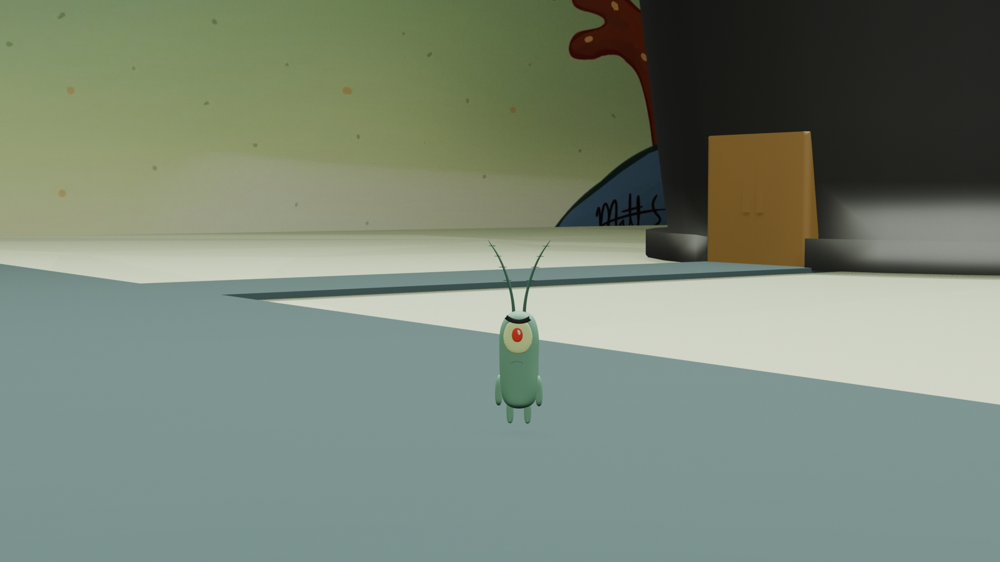
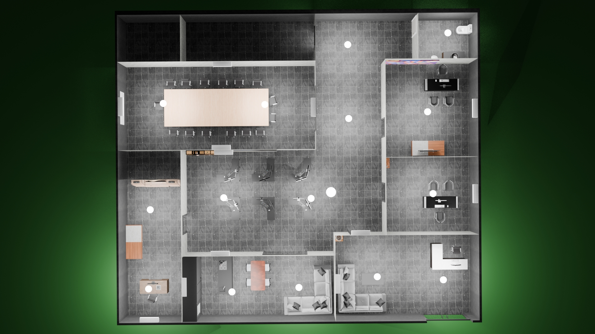
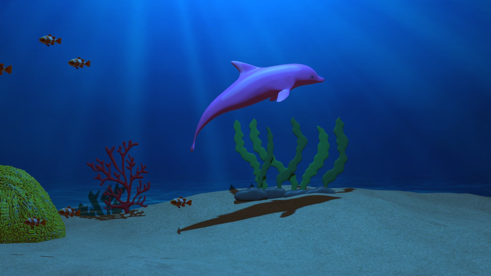
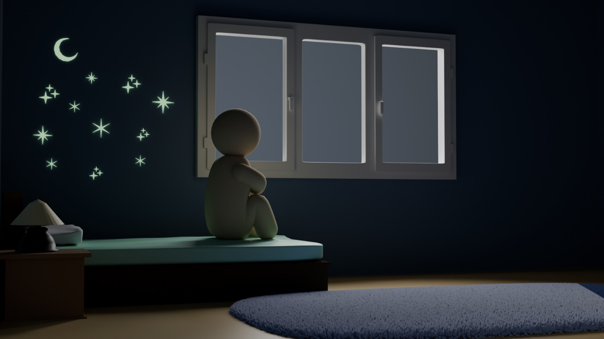
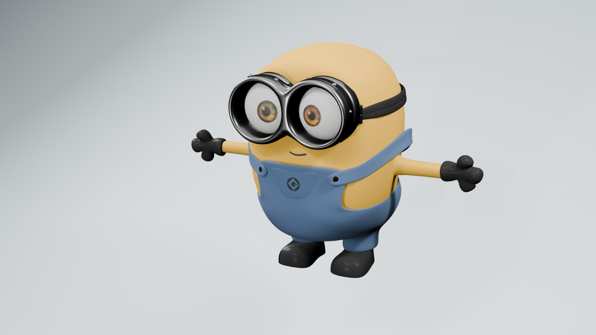

Descripción del Proyecto
Exploración del flujo completo de producción 3D dentro de Blender, abarcando desde la conceptualización y el modelado geométrico hasta el texturizado, rigging e iluminación. El enfoque principal fue dominar la topología de mallas y la optimización de escenas para proyectos multimedia interactivos.

Modelado Estilizado: Kuromi
Recreación geométrica de personaje con un flujo enfocado en mallas limpias. Configuración de armature para articulación fluida evitando deformaciones en las uniones.

Escena Conceptual "concientizacion del medio ambiente"
Manejo de materiales translúcidos y refracción de luz (vidrio). Composición de iluminación cenital dirigida para guiar la narrativa y el enfoque visual de la escena.

Modelado de Plankton
Diseño y texturizado del personaje integrado en un escenario low-poly. Trabajo de pesado de vértices para expresiones y poses.

Distribución de Escenario Cenital
Diseño de entornos e interiores a partir de una vista aérea. Implementación de múltiples luces artificiales puntuales y focales para lograr profundidad y realismo ambiental.

Entorno Submarino Orgánico
Modelado de elementos orgánicos (arrecifes, algas y fauna marina). El principal reto técnico fue simular la densidad del agua y los rayos de luz filtrándose desde la superficie.

Narrativa Visual: Soledad Nocturna
Creación de una escena de interior con iluminación de bajo contraste. Configuración de materiales con emisión propia para las estrellas de la pared y balance de sombras.

Modelado de Personaje: Minion
Modelado de personaje basado en referencias con múltiples capas de geometría (cuerpo, overol y lentes). Estructurado en Pose en T listo para rigging.